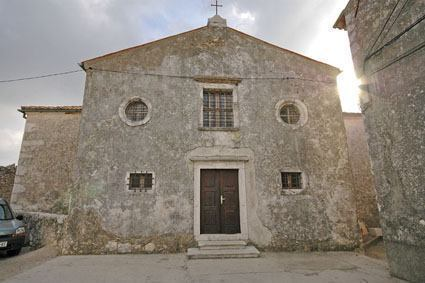
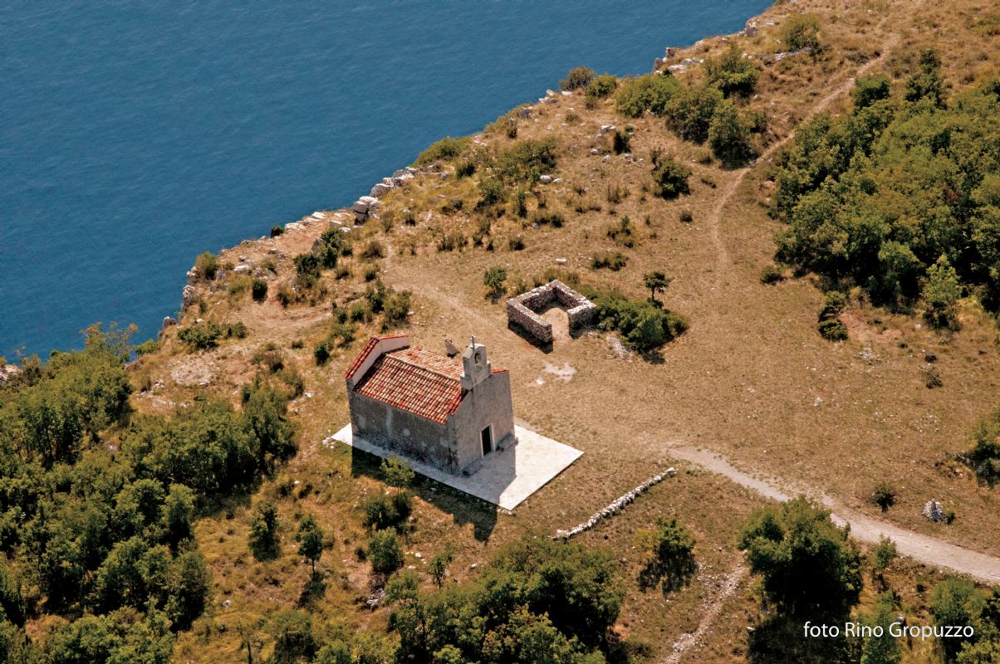

Brseč
Brseč je poznato malo mjesto sa velikom povijesnom kulturom.
Ima staromodnu energiju i brojne čimbenike koji ga čine zanimljivim pogotovo kuće koje su tipičan primjer primorske arhitekture, a na nekima su još i danas vidljivi natpisi u Glagoljici.
Neke od bitnijih Brsečkih župa su:
Župna crkva Sv. Jurja, Crkva sv. Križa, Crkva sv. Magdalene, Crkva sv. Stjepana na brsečkom groblju, te selo i Crkva Sv. Jelena i u biti Kapela sv. Nikole u Goloviku.

Župna crkva Sv. Jurja, najstarija Brsečka župa
U gradskoj se loži, na ulazu u stari grad, nalazi bista slavnog Eugena Kumičića, hrvatskog književnika i političara. Rođen je u Brseču gdje se nalazi i njegova rodna kuća, danas pretvorena u knjižnicu i vrlo impresivnu galeriju „Eugen K" gdje izlažu eminentni hrvatski i strani umjetnici.
Nezaboravan se pogled pruža s hridi kraj male Crkve sv. Magdalene. Smještaj u Brseču i bližoj okolici može se pronaći u privatnim sobama i apartmanima.

Pogled s crkve Sv. Magdalene.